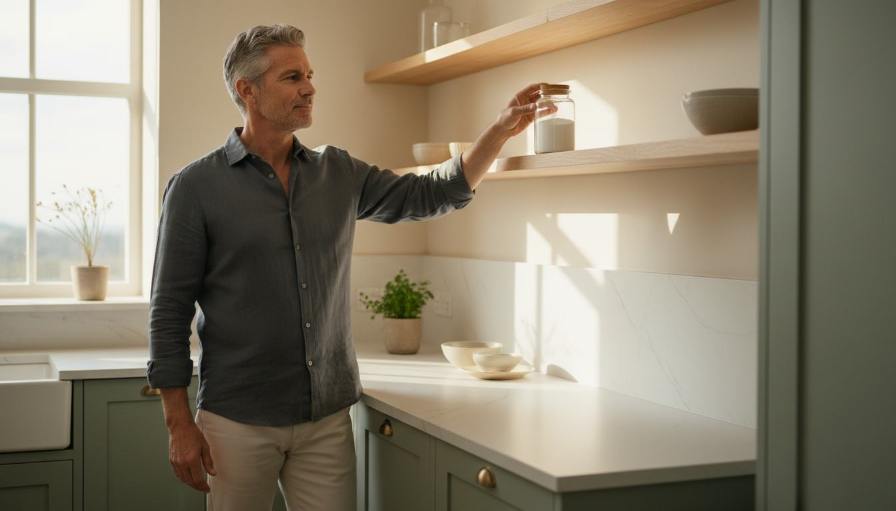
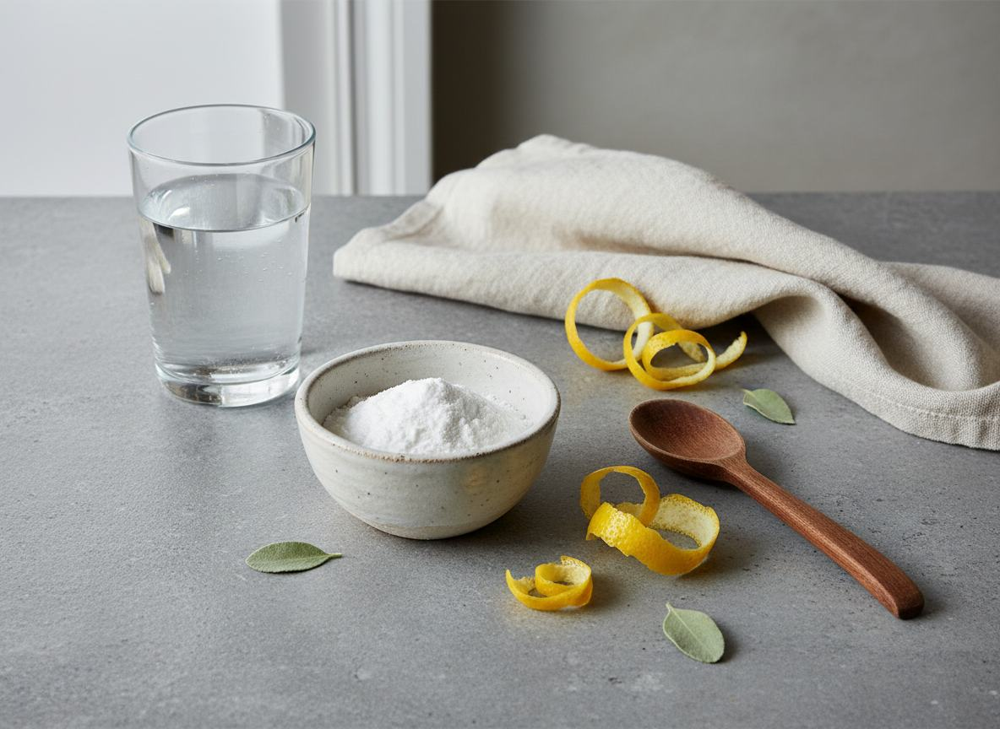

FROM THE HOME KITCHEN
The familiar white powder men keep asking about.
Baking soda has always had a place in the kitchen. But a simple conversation about the ingredient is making some men look at an everyday routine a little differently.
The interesting part is not the jar. It is the detail most people skip over.
WATCH THE SHORT VIDEOA brief editorial look at a kitchen staple and the question behind the curiosity.

THE WHITE POWDER A SMALL KITCHEN DETAILSometimes curiosity begins with what was already on the shelf.
THE DETAIL
Why has baking soda become part of a more private conversation?
There is no complicated shopping list here. No dramatic before-and-after story. Just a familiar powder, a simple routine and a question that keeps coming up in conversations between men.
The video follows that question without giving away the whole answer on the page. It explains the overlooked detail behind the routine and why the timing matters.
“The most interesting ingredient may be the one everyone already knows.”SEE WHAT THE ROUTINE MISSES

THE PART TO NOTICE
It is not about adding more. It is about seeing the familiar in context.
A small kitchen staple. A quiet question. A short video that connects the two without turning a simple idea into a promise.
WATCH THE FULL EXPLANATIONAdvertising disclosure: This is sponsored editorial content. The external video may contain a partner offer. No purchase is made on this page.
This page is for general informational and editorial purposes. Baking soda is not presented here as a treatment, cure or prevention for erectile dysfunction or any other disease. The page does not guarantee any particular personal outcome.